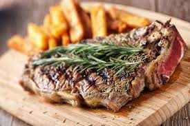

Steak & Chips

Description
Steak and chips is the best meal ever invented. Literally God's gift to humanity.
Ingredients
- Steak
- Chips
- Picobella tomatoes
- Salt
- Pepper
- Butter
- oil
- Garlic
Steps
- Take steak out of fridge 20 minutes before use. Add salt and pepper.
- Preheat oven to 200°C.
- Place chips on baking tray in oven for approximately 20 minutes.
- Crush cloves of garlic.
- When there are approximately seven minutes left for the chips, place pan on high heat, once it is hot, add oil.
- When oil is hot, add steak to pan.
- Cook each side for one minute.
- Add the butter and garlic cloves.
- Then lower heat to medium and cook each side for an additional 30 seconds, do this one to two times for rare, three for medium and five for
well done. Continuously baste with the butter.
- Set steak aside.
- Remove chips from oven and place on plate.
- Add steak and tomates.